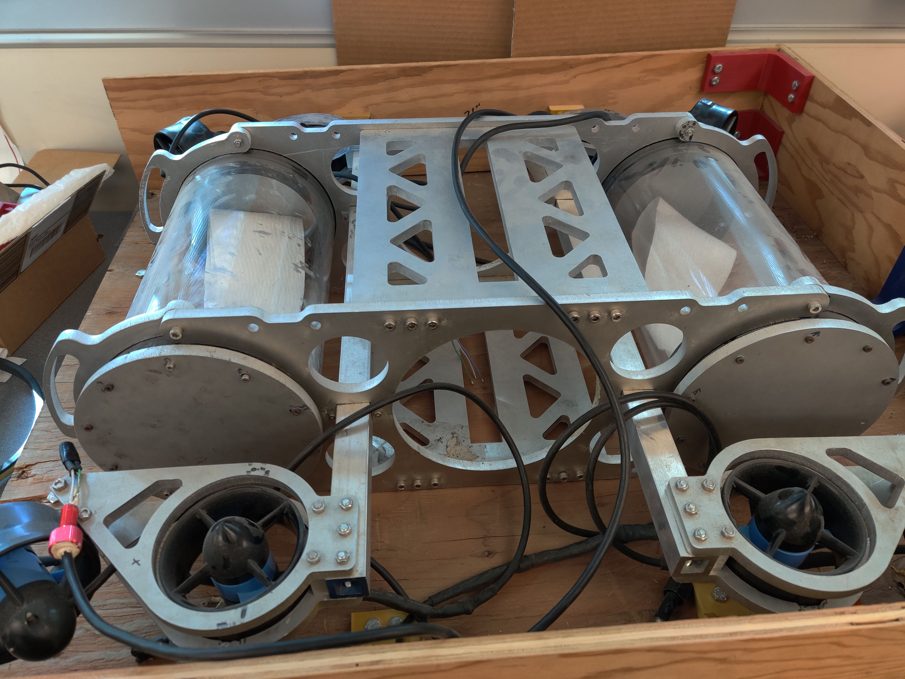
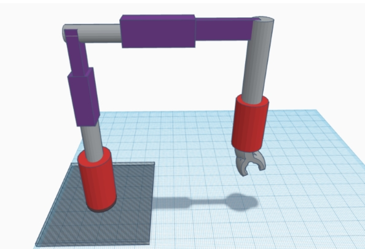
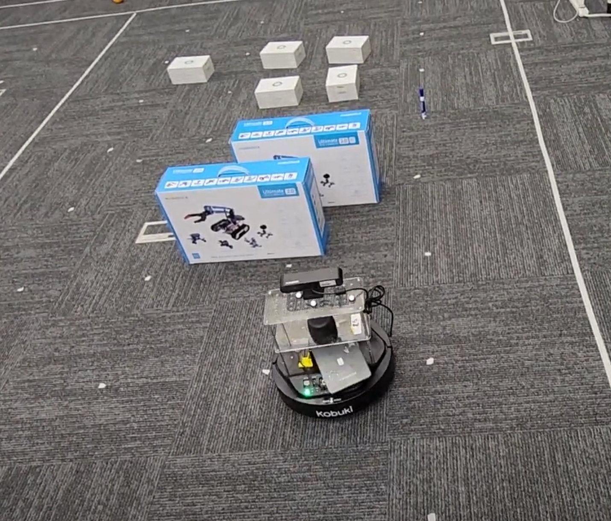
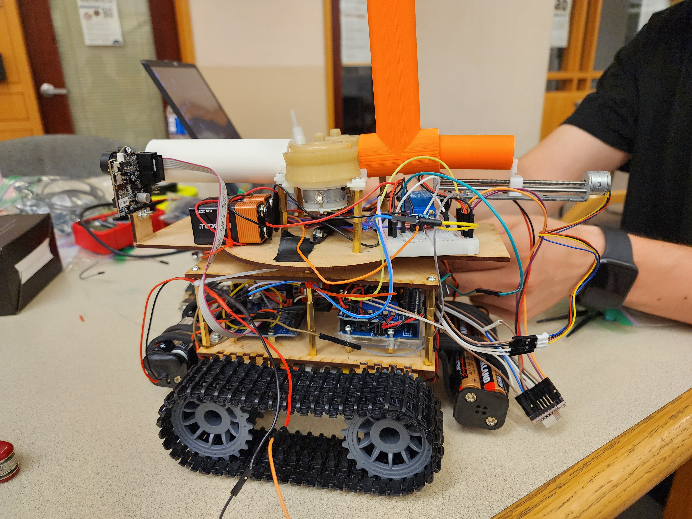

Projects
Bread Recipe Autonomous Device (BRAD)
BRAD was my senior design project during my undergrad. BRAD is a fully autonomous bread maker
complete with web app control. All the user needs to do is make sure BRAD has access to ingredients by
filling the top containers. Using the web app, the user can start the bread making process from wherever
they are and have fresh bread by the time they get home.

LEVIATHAN (RoboSub)
Leviathan is an autonomous underwater vehicle (AUV) and is UCR's entry into the robosub competition. I worked extensively on
the electrical team and was responsible for many of the PCB designs including the battery management system and the step-up/step-down
voltage regulation circuits. I also played a role in the development of the firmware.



Palletizing Robotic Arm (analytical project)
As part of the graduate program, I had to design a robot from the ground up. I decided to design a robotic arm that could be
used within industrial settings to complete palletizing tasks. My arm consists of four joints in series, two revolute (in red) and two
prismatic (in purple) joints. The revolute joints allow the robot to orient itself to ensure proper stacking of products while the prismatic
joints allow the robot to stack pallets of various heights and widths. My analysis included the kinematics (both forward and inverse),
velocity kinematics using Jacobian matricies and a statics analysis while the arm was under load.

Autonomous Obstacle Avoidance
For this robotics project, I was tasked with programming a robot to navigate a series of obstacles. The A* algorithm was used
to find the shortest path to the goal point and polynomial time scaling was used to smooth out the robot's movements.

Autonomous Mini Tank
This was my final project for my robotics fabrication course. The mini tank is composed of both laser cut and 3D printed parts. My
main role was the design of the turret. The base is a laser cut piece of wood while the barrel and magazine are 3D printed PLA. A
linear actuator is used to push a foam ball into two flywheels where the ball is then launched. Once the linear actuator retracts, a
ball falls down into the chamber from the magazine where the process repeats itself. The turret is controlled by a servo connected to
a pixy cam that is trained on a specific target. For this project, the pixy cam was trained on red solo cups. Once a red solo cup is
spotted, the turret is activated.

Project Title 6
Description of Project 6.